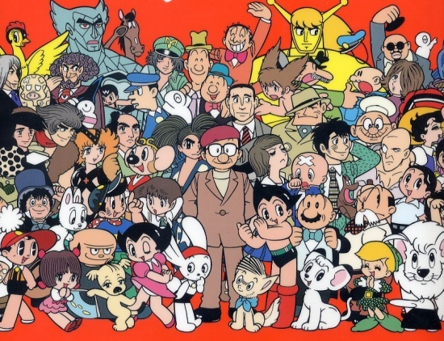
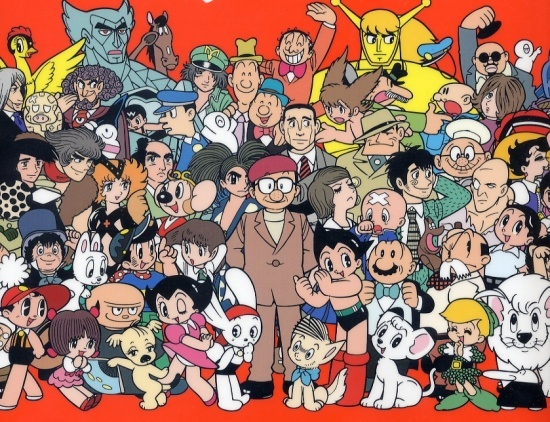
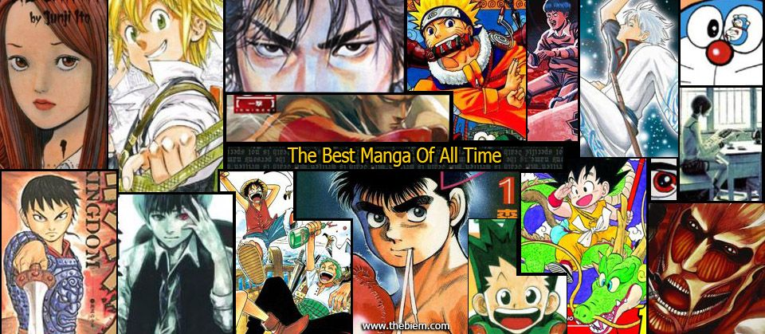
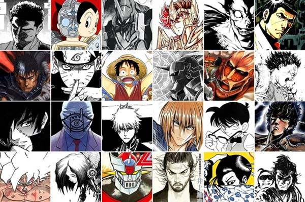
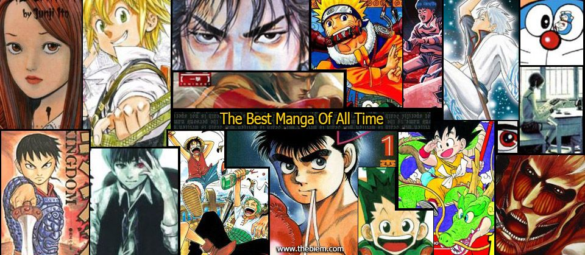
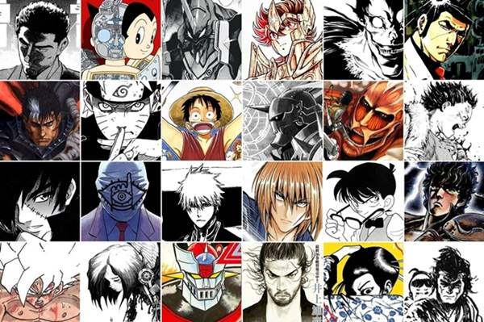

Overview
Purpose
The purpose of the "Chainsaw-Manga" web page is to provide information and ratings a bout various manga titles, as well as introduce readers to the world of manga. Through thoughtful analysis and review, the web page aims to help readers discover new titles they may enjoy and provide guidance on which manga series are worth reading.
Audience
The web page can be directed to anyone who is interested in manga and wants to learn more about the medium. This could include fans of other forms of Japanese entertainment, such as anime or video games, as well as those who are simply looking for new and engaging storytelling experiences. The web page can also appeal to people who are interested in art and illustration, as manga is known for its unique visual style. Overall, the "Chainsaw-Manga" web page can be a valuable resource for anyone looking to explore the diverse and fascinating world of manga.
Branding
Website Logo
Style Guide
Color Palette
Palette URL: https://coolors.co/396e94-e7c24f-a43312-381d2a-aabd8c| Primary | Secondary | Accent 1 | Accent 2 |
|---|---|---|---|
| [#396E94] | [#E7C24F] | [#A43312] |
Typography
Heading Font: Roboto Condensed
Paragraph Font: Open Sans
Welcome to Chainsaw-Manga, the ultimate destination for manga fans and newcomers alike! Our website is dedicated to providing you with comprehensive information, analysis, and ratings of various manga titles. We carefully curate our reviews to help you find the best and most exciting manga series, and to deepen your appreciation of the medium's unique storytelling style. Whether you're a seasoned manga reader or just getting started, we're confident that you'll find something of value here at Chainsaw-Manga. So why wait? Dive into our website, explore our reviews, and discover your next favorite manga series today!
At Chainsaw-Manga, we're passionate about all things manga, and we're excited to share that passion with you. Our website is designed to be a comprehensive resource for manga fans of all experience levels, from those who are just starting to explore the medium to those who have been reading manga for years. We believe that manga is a unique and powerful form of storytelling, with the ability to transport readers to new worlds, introduce them to complex characters, and explore a wide range of themes and topics.
Colored paragraph example
Please note that all manga ratings and opinions on Chainsaw-Manga are my own. Manga is subjective, so my ratings may not reflect the opinions of all readers. I encourage you to read each series and form your own opinions. As always, I welcome your feedback and comments.
Navigation
Site Map
Content
Home page
Welcome to Chainsaw-Manga, your go-to source for everything manga-related! On our home page, you'll find a wealth of information about manga, including an introduction to the art form and its various genres. We'll provide you with an overview of manga's unique style, which is characterized by its distinct visuals, storytelling, and themes. Our site is designed to be accessible to both seasoned manga readers and ewcomers to the genre. Whether you're interested in learning about the different genres of manga or exploring new series, we've got you covered. One of the main features of our home page is our comprehensive guide to manga genres. You'll find detailed information about the most popular genres, including Shonen, Shojo, Seinen, and Josei. We'll help you understand the unique characteristics of each genre and provide recommendations for series that you're sure to love. Our guide also includes information about the magazines where manga is published, including popular titles like Shonen Jump, Nakayoshi, and Big Comic Spirits. Here you will learn about what makes manga special and unique from othe comimc styles, talking about drawing and story telling. Here you will also find a bit of history about the manga, about its beginnings and evolution, as well as information about the most outstanding and important manga authors in this field, having for example Osamu Tezuka being called "the god of manga" or Naoki Urasawa, among others
Images for the Home page
 

Top Mangas
Welcome to the "My Top Manga" page, where you can discover some of the best manga series that I have personally read and enjoyed. As an avid manga enthusiast and reviewer, I have spent countless hours exploring the vast and diverse world of manga. On this page, you'll find detailed information about my top manga picks, including the author, genre, and art style of each series, as well as my personal opinion on why I think they're worth reading. Whether you're a longtime manga fan looking for your next favorite series, or a newcomer to the genre seeking some guidance on where to start, my top manga recommendations are sure to provide you with hours of captivating storytelling, stunning artwork, and unforgettable characters. From action-packed Shonen titles to heartwarming Shoujo stories, my top manga selections cover a wide range of genres and themes. So, whether you're in the mood for a thrilling adventure, a romantic comedy, or a poignant drama, you're sure to find something that suits your tastes on this page. Each of my top manga picks has been carefully selected based on its unique qualities, including compelling storytelling, well-developed characters, and stunning artwork. So, if you're ready to dive into the world of manga and discover some incredible new series, be sure to check out my top manga picks and see what all the buzz is about!
Images for the Page 2
 



Newest Mangas
Welcome to our third page, dedicated to showcasing the latest and upcoming manga releases. We provide a short introduction to each title, highlighting its unique qualities and why it might be worth your time. Our page also includes information on whether a particular manga is licensed in English and/or Spanish, and which publishers are responsible for its release. This way, you can easily find a physical copy of the manga if it interests you, or locate an online version to read. Additionally, we keep you up-to-date on any news related to the anime adaptation of the manga, including whether it has already been released, has been announced, or if there is no information available yet. Our goal is to keep you informed and help you discover the newest and most exciting manga titles available.
Images for the Page 3
Wireframes
Create three wireframes for your site. One for each page and list them here
Home
[Any additional details about home that the wireframe does not make clear]
[Page 2]
[Any additional details about page 2 that the wireframe does not make clear]
[Page 3]
[Any additional details about page 3 that the wireframe does not make clear]